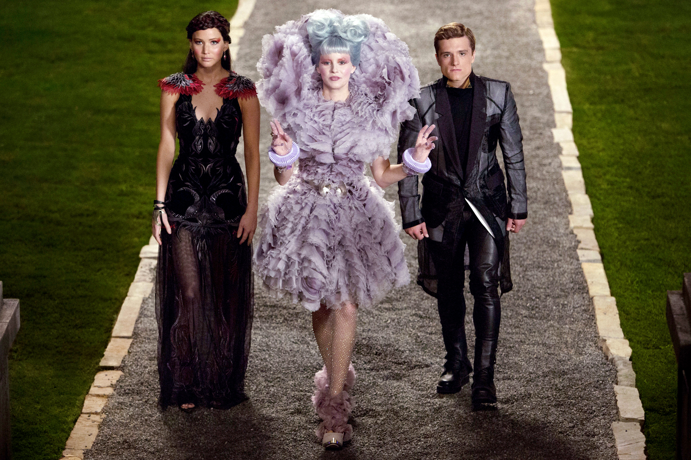

|
SummaryHunger Games is about a young teenage girl named Katniss Everdeen, who is sixteen years old. In Panam, they have an annual event called the Hunger Games. There are 12 Districts in Panam (there was 13 but District 13 was destroyed), and Katniss lives in District 12, where every year everyone in the community gathers in the town square. All the girls and boys between the ages of 12 and 18 have their names put in a bowl, and one girl and one boy are drawn in what is called the reaping. The peoples’ names that are drawn have to go to the Hunger Games. The Capital, where all the rich and powerful people live, design an arena where they take the two kids from each district (24 total) go to fight to the death. The last person left standing is crowned the victor, and gets to go home to live the rest of their life in luxury. When District 12 had the reaping this time it was Prim, Katniss’s sisters, first time having her name in the bowl. With all odds not in their favor, Prim’s name was drawn and the heartbroken Katniss Everdeen volunteered for her. Peeta Mellark was the boy who was drawn, a kid from Katniss’s school who had helped her a lot when she had no food after her dad’s death. Together the two went into the arena, and started to form a love interest with each other. Soon after Katniss’s ally, Rue, died the Capital announced that if the tributes are from the same district then they could both win. That means that both Katniss and Peeta could make it out alive! Katniss found Peeta with a severely injured leg, and they hideaway in a cave. There they grew closer and closer together. Katniss felt as if it was all a hoax, but deep down couldn’t deny she became closer to Peeta. They stayed together in the cave, Katniss nursing Peeta back to life, as more and more tributes died. Clinging to the thought that they have a chance of both making it back home alive. "You could live a thousand lives and not deserve him." -Haymitch Abernathy |